컴퓨터활용능력-1급 (2015-06-27 기출문제)
1과목: 컴퓨터 일반
1. 다음 중 컴퓨터의 발전 과정으로 3세대 이후의 특징에 해당하지 않는 것은?
- 개인용 컴퓨터의 사용
- 전문가 시스템
- 일괄처리 시스템
- 집적회로의 사용
(정답률: 82%)

2. 다음 중 Windows 탐색기에서 [보기] 메뉴의 [내용]을 선택 했을 때 각 파일이나 폴더에 표시되는 내용으로 옳지 않은 것은?(윈도우 10 검증 완료)
- 수정한 날짜
- 디스크 여유 공간
- 파일의 크기
- 파일의 유형
(정답률: 87%)
3. 다음 중 Windows 7의 [Windows 작업 관리자] 창에서 수행할 수 있는 작업으로 옳지 않은 것은?(윈도우 10 검증 완료)
- 사용자 계정의 추가와 삭제를 수행할 수 있다.
- 현재 실행 중인 프로그램을 강제로 종료시킬 수 있다.
- 시스템의 CPU 사용 내용이나 할당된 메모리의 크기를 파악할 수 있다.
- 현재 네트워크 상태를 보고 네트워크 이용률을 확인할 수 있다.
(정답률: 70%)
4. 다음 중 웹 프로그래밍 언어에 해당하지 않는 것은?
- DHTML
- COBOL
- SGML
- WML
(정답률: 76%)
5. 다음 중 인터넷 통신 장비인 게이트웨이(Gateway)의 기본적인 역할에 관한 설명으로 옳은 것은?
- 현재 위치한 네트워크에서 다른 네트워크로 연결할 때 사용된다.
- 인터넷 신호를 증폭하며 먼 거리로 정보를 전달할 때 사용된다.
- 네트워크 계층의 연동장치로 경로 설정에 사용된다.
- 문자로 된 도메인 이름을 숫자로 이루어진 실제 IP 주소로 변환하는데 사용된다.
(정답률: 73%)
6. 다음 중 Windows 7에서 사용하는 바로 가기키에 대한 설명으로 옳지 않은 것은?(윈도우 10 검증 완료)
- 윈도우키 + L : 컴퓨터 잠금 또는 사용자 전환
- 윈도우키 + R : 실행 대화상자 열기
- 윈도우키 + Pause : 제어판의 [시스템] 창 표시
- 윈도우키 + E : 장치 및 프린터 추가
(정답률: 74%)
7. 다음 중 인터넷 보안을 위한 해결책으로 사용되는 암호화 기법에 대한 설명으로 옳지 않은 것은?
- 비밀키 암호화 기법은 동일한 키로 데이터를 암호화 하고 복호화한다.
- 비밀키 암호화 기법은 대칭키 암호화 기법 또는 단일키 암호화 기법이라고도 하며, 대표적으로 DES(Data Encryption Standard)가 있다.
- 공개키 암호화 기법은 비대칭 암호화 기법이라고도 하며, 대표적인 암호화 방식으로 RSA(Rivest, Shamir, Adleman)가 있다.
- 공개키 암호화 기법에서는 암호화할 때 사용하는 키는 비밀로 하고, 복호화할 때 사용하는 키는 공개하는 방식을 사용한다.
(정답률: 80%)
8. 다음 중 소프트웨어의 사용권에 따른 분류에 대한 설명으로 옳지 않은 것은?
- 애드웨어 : 배너 광고를 보는 대가로 무료로 사용하는 소프트웨어이다.
- 셰어웨어 : 정식 버전이 출시되기 전에 프로그램에 대한 일반인의 평가를 받기 위해 제작된 소프트웨어이다.
- 번들 : 특정한 하드웨어나 소프트웨어를 구매하였을 때 포함하여 주는 소프트웨어이다.
- 프리웨어 : 돈을 내지 않고도 사용가능하고 다른 사람에게 전달해 줄 수 있는 소프트웨어이다.
(정답률: 87%)
9. 다음 중 동영상 데이터 파일 형식으로 옳지 않은 것은?
- AVI
- DVI
- ASF
- DXF
(정답률: 71%)
10. 다음 중 컴퓨터의 운영체제에 대한 설명으로 옳지 않은 것은?
- 시스템의 모든 동작 상태를 관리하고 감독하는 제어프로그램의 핵심 프로그램을 슈퍼바이저(Supervisor)라 부른다.
- 운영체제는 컴퓨터가 동작하는 동안 하드디스크 내에 위치하여 여러 종류의 자원 관리 서비스를 제공한다.
- 키보드, 모니터, 디스크 드라이브 등의 필수적인 주변장치들을 관리하는 BIOS를 포함한다.
- 운영체제는 사용자가 응용프로그램을 편리하게 사용하고, 하드웨어의 성능을 최적화 할 수 있도록 한다.
(정답률: 43%)
11. 다음 중 시스템의 정보 보안을 위한 기본 충족 요건으로 적절하지 않은 것은?
- 시스템 내의 정보와 자원은 인가된 사용자만 접근이 허용되어야 한다.
- 소프트웨어의 버전과 저작권에 관한 내용이 인증되어야 한다.
- 정보를 전송하는 과정에서 변경되지 않고 전달되어야 한다.
- 사용자를 식별하고 접근 권한을 확인할 수 있어야 한다.
(정답률: 65%)
12. 다음 중 컴퓨터에서 사용되는 펌웨어(Firmware)에 대한 설명으로 옳지 않은 것은?
- 하드웨어의 동작을 지시하는 소프트웨어이지만 하드웨어적으로 구성되어 하드웨어의 일부분으로도 볼 수 있는 제품을 말한다.
- 하드웨어 교체 없이 소프트웨어 업그레이드 만으로 시스템의 성능을 높이기 위한 목적으로 사용된다.
- 시스템의 효율을 높이기 위해 RAM에 저장되어 관리된다.
- 기계어 처리, 데이터 전송, 부동 소수점 연산, 채널 제어 등의 처리 루틴을 가지고 있다.
(정답률: 75%)
13. 다음 중 멀티미디어와 관련하여 JPG 파일 형식에 관한 설명으로 옳지 않은 것은?
- 사진과 같은 정지 영상을 표현하기 위한 국제 표준 압축 방식이다.
- 24비트 컬러를 사용하여 트루컬러로 이미지를 표현 한다.
- 사용자가 압축률을 지정해서 이미지를 압축하는 압축 기법을 사용할 수 있다.
- 이미지를 확대해도 테두리가 거칠어지지 않고 매끄럽게 표현된다.
(정답률: 76%)
14. 다음 중 어떤 장치가 다른 장치의 일을 잠시 중단시키고 자신의 상태변화를 알려주는 것을 뜻하는 용어로 옳은 것은?
- 클라이언트/서버
- 인터럽트
- DMA
- 채널
(정답률: 80%)
15. 다음 중 DNS가 가지고 있는 특정 도메인의 IP Address를 검색해 주는 서비스로 옳은 것은?
- Gopher
- Archie
- IRC
- Nslookup
(정답률: 80%)
16. 다음 중 PC 업그레이드 시 고려해야 할 사항으로 옳지 않은 것은?
- RAM이나 ODD를 설치할 때 접근 속도의 수치는 작은 것이 좋다.
- 하드디스크를 교체할 때에는 연결방식의 종류와 버전을 확인한다.
- CPU 클럭 속도는 높은 것이 좋다.
- RAM을 추가할 때에는 기존의 것 보다 더 많은 핀 수의 RAM으로 추가한다.
(정답률: 63%)
17. 다음 중 Windows 7의 [글꼴]에 관한 설명으로 옳지 않은 것은?(윈도우 10 검증 완료)
- 글꼴 파일은 .rtf 또는 .inf 의 확장자를 가지고 있다.
- 시스템에서 사용하는 글꼴은 C:\Windows\Fonts 폴더에 파일 형태로 저장되어 있다.
- TrueType 글꼴과 OpenType 글꼴을 제공하며, 프린터 및 프로그램에서 작동한다.
- 글꼴에는 기울임꼴, 굵게, 굵게 기울임꼴과 같은 글꼴 스타일이 있다.
(정답률: 63%)
18. 다음 중 인터넷 주소 체계에서 IPv6에 관한 설명으로 옳지 않은 것은?
- 128 비트의 주소를 사용하여 IPv4의 주소 부족 문제를 해결하였다.
- IPv4와 비교하였을때 자료 전송 속도가 늦지만, 주소의 확장성과 융통성이 우수하다.
- 인증성, 기밀성, 데이터 무결성의 지원으로 보안 기능을 포함한다.
- IPv4와 호환성이 있으며, 실시간 흐름제어가 가능하다.
(정답률: 88%)
19. 다음 중 유비쿼터스 센서 네트워크(USN)의 활용 분야에 속하는 것은?
- 테더링
- 텔레매틱스
- 블루투스
- 고퍼
(정답률: 77%)
20. 다음 중 Windows 7의 [제어판]-[프로그램 및 기능]에 대한 설명으로 옳지 않은 것은?(윈도우 10 검증 완료)
- Windows에 설치되어 있는 응용 프로그램을 변경하거나 제거할 수 있다.
- 게임, 인쇄 및 문서 서비스, 인터넷 정보 서비스 등 Windows 7에 포함되어 있는 다양한 기능의 사용 여부를 선택할 수 있다.
- 설치된 업데이트를 확인할 수 있으며, 업데이트 목록에서 업데이트를 제거하거나 변경할 수 있다.
- [온라인으로 추가 테마보기]를 선택하여 Microsoft사에서 제공하는 다양한 테마를 추가 설치할 수 있다.
(정답률: 74%)
2과목: 스프레드시트 일반
21. 다음 중 아래 그림에서의 각 기능에 대한 설명으로 옳지 않은 것은?
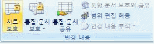
- [시트 보호]를 설정하면 기본적으로 셀의 선택만 가능하다.
- 시트 보호 시 특정 셀의 내용만 수정 가능하도록 하려면 해당 셀의 [셀 서식]에서‘잠금’설정을 해제한다.
- [통합 문서 보호]를 설정하면 포함된 차트, 도형 등의 그래픽 개체를 변경할 수 없다.
- [범위 편집 허용]을 이용하면 보호된 워크시트에서 특정 사용자가 범위를 편집할 수 있도록 허용할 수 있다.
(정답률: 65%)
22. 다음 중 자동 필터에 관한 설명으로 옳지 않은 것은?
- 데이터에 필터를 적용하면 지정한 조건에 맞는 행만 표시되고 나머지 행은 숨겨지며, 필터링된 데이터는 다시 정렬하거나 이동하지 않고도 복사, 찾기, 편집 및 인쇄를 할 수 있다.
- ‘상위 10 자동 필터’는 숫자 데이터 필드에서만 설정 가능하고, 텍스트 데이터 필드에서는 사용할 수 없다.
- 한 열에 숫자 입력 셀이 5개 있고, 텍스트 입력 셀이 3개 있는 경우 자동 필터는 셀의 수가 적은‘텍스트 필터’명령으로 표시된다.
- 날짜 데이터는 연, 월, 일의 계층별로 그룹화되어 계층에서 상위 수준을 선택하거나 선택을 취소하는 경우 해당 수준 아래의 중첩된 날짜가 모두 선택되거나 선택 취소된다.
(정답률: 58%)
23. 다음 중 [셀 서식] 대화상자의 [맞춤] 탭에‘텍스트 방향’에서 설정할 수 없는 항목은?
- 텍스트 방향대로
- 텍스트 반대방향으로
- 왼쪽에서 오른쪽
- 오른쪽에서 왼쪽
(정답률: 68%)
24. 아래 시트에서 [표1]의 할인율[B3]을 적용한 할인가 [B4]를 이용하여 [표2]의 각 정가에 해당하는 할인가 [E3:E6]를 계산하고자 한다. 다음 중 이때 가장 적합한 데이터 도구는?
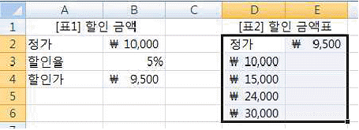
- 통합
- 데이터 표
- 부분합
- 시나리오 관리자
(정답률: 67%)
25. 다음 중 Excel과 Access 간의 데이터 교환 방법에 대한 설명으로 적절하지 않은 것은?
- Excel 통합 문서를 열 때 Access 데이터에 연결하려면 보안 센터 표시줄을 사용하거나 통합 문서를 신뢰할 수 있는 위치에 둠으로써 데이터 연결을 사용할 수 있도록 설정 해야 한다.
- Excel의 [데이터] 탭 [외부 데이터 가져오기] 그룹에서 [기타 원본]-[Microsoft Query] 기능을 이용하면 외부 Access 원본 데이터와 동기화할 수 있다.
- Excel의 [외부 데이터 가져오기] 기능을 이용하면 Access 파일의 특정 테이블만 선택하여 가져올 수 있다.
- Excel의 [데이터] 탭 [연결] 그룹에서 [속성]을 클릭하면 기존 Access 파일의 연결을 추가하거나 제거할 수 있다.
(정답률: 51%)
26. 다음 중 바닥글 영역에 페이지 번호를 인쇄하도록 설정된 여러 개의 시트를 출력하면서 전체 출력물의 페이지 번호가 일련번호로 이어지게 하는 방법으로 옳지 않은 것은?
- [인쇄] 대화상자에서‘인쇄 대상’을‘전체 통합 문서’로 선택하여 인쇄한다.
- 전체 시트를 그룹으로 설정한 후 인쇄한다.
- 각 시트의 [페이지 설정] 대화상자에서‘일련번호로 출력’을 선택한 후 인쇄한다.
- 각 시트의 [페이지 설정] 대화상자에서‘시작 페이지 번호’를 일련번호에 맞게 설정한 후 인쇄한다.
(정답률: 65%)
27. 다음 중 아래의 시트에서 수식 =DSUM(A1:D7, 4, B1:B2)을 실행했을 때의 결과 값으로 옳은 것은?
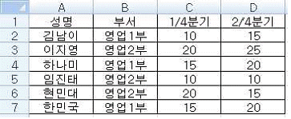
- 10
- 15
- 40
- 55
(정답률: 67%)
28. 텍스트 파일의 데이터를 워크시트로 가져올 때 사용하는 [텍스트 마법사]에서 각 필드의 너비(열 구분선)를 지정하는 단계에 대한 설명으로 옳지 않은 것은?
- 앞 단계에서 원본 데이터 형식을 ‘구분 기호로 분리됨’을 선택한 경우 열 구분선을 지정할 수 없다.
- 구분선을 넣으려면 원하는 위치를 마우스로 클릭한다.
- 열 구분선을 옮기려면 구분선을 삭제한 후 다시 넣어야 한다.
- 구분선을 삭제하려면 구분선을 마우스로 두 번 클릭한다.
(정답률: 64%)
29. 다음 중 아래 프로시저의 실행 결과로 옳은 것은?
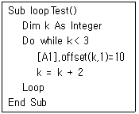
- [A2]셀에 10이 입력된다.
- [A1]셀과 [A3]셀에 10이 입력된다.
- [B2]셀에 10이 입력된다.
- [B1]셀과 [B3]셀에 10이 입력된다.
(정답률: 40%)
30. 다음 중 여러 워크시트를 선택하여 그룹으로 설정한 경우에 대한 설명으로 옳지 않은 것은?
- 엑셀 창의 맨 위 제목 표시줄에 [그룹]이라고 표시된다.
- 그룹 상태에서 도형이나 차트 등의 그래픽 개체는 삽입되지 않는다.
- 그룹으로 설정된 임의의 시트에서 입력하거나 편집한 데이터는 그룹으로 설정된 모든 시트에 반영된다.
- 그룹 상태에서 여러 개의 시트에 정렬 및 필터 기능을 수행할 수 있다.
(정답률: 32%)
31. 아래의 시트에서 [I2:I5] 영역에 [B2:F14] 영역의 표를 참조하는 배열수식을 사용하여 지점별 총대출금액을 구하였다. 다음 중 [I2] 셀의 수식 입력줄에 표시된 함수식으로 옳은 것은?
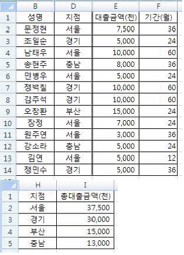
- {=SUMIF($D$2:$D$14=H2))}
- {=SUMIF($D$2:$D$14=H2,$E$2:$E$14,1))}
- {=SUM(IF($D$2:$D$14=H2,1,0))}
- {=SUM(IF($D$2:$D$14=H2,$E$2:$E$14,0))}
(정답률: 48%)
32. 다음 중 공유된 통합 문서에 대한 설명으로 옳지 않은 것은?
- 공유된 통합문서에서는 조건부 서식, 차트, 시나리오 등을 추가하거나 편집할 수 없다.
- 암호로 보호된 공유 통합 문서에서 보호를 해제 하여도 통합 문서의 공유 상태는 해제되지 않는다.
- 공유 통합 문서를 네트워크 위치에 복사해도 다른 통합 문서와의 연결은 그대로 유지된다.
- 공유 통합 문서는 사용자의 엑셀 버전과 관련이 있다.
(정답률: 40%)
33. 다음 중 연이율 4.5%로 2년 만기로 매월 말 400,000원씩 저축할 경우, 복리 이자율로 계산하여 만기에 찾을 수 있는 금액을 구하기 위한 수식으로 옳은 것은?
- =FV(4.5%/12, 2*12,-400000)
- =FV(4.5%/12, 2*12,-400000,,1)
- =FV(4.5%, 2*12, -400000,,1)
- =FV(4.5%, 2*12, -400000)
(정답률: 60%)
34. 아래의 왼쪽 차트를 수정하여 오른쪽 차트로 변환하였다. 다음 중 변환된 항목에 대한 설명으로 옳은 것은?
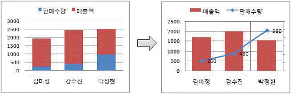
- 기본 가로 눈금선으로 보조 눈금선을 표시하였다.
- 보조 세로 (값) 축의 주 눈금을 ‘500’으로 설정하였다.
- 매출액 계열을 보조 축으로 설정하였다.
- 보조 세로 (값) 축의 축 레이블을 ‘없음’으로 설정하였다.
(정답률: 44%)
35. 다음 중 배열 수식과 배열 상수에 대한 설명으로 옳지 않은 것은?
- 배열 수식에서 잘못된 인수나 피연산자를 사용할 경우 ‘#VALUE!’의 오류값이 발생한다.
- 배열 상수는 숫자, 논리값, 텍스트, 오류값 외에 수식도 사용할 수 있다.
- 배열 상수에서 다른 행의 값은 세미콜론(;), 다른 열의 값은 쉼표(,)로 구분한다.
- <Ctrl>+<Shift>+<Enter>키를 누르면 중괄호({ }) 안에 배열 수식이 표시된다.
(정답률: 48%)
36. 다음 중 아래 시트의 [A1:C8] 영역에서 아래 그림과 같이 조건부 서식을 적용한 경우 서식이 적용되는 셀의 개수로 옳은 것은?
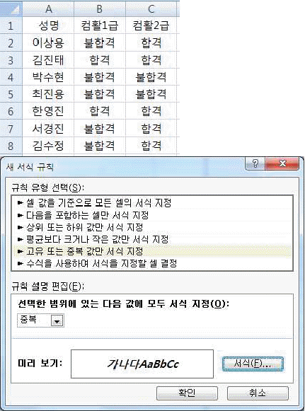
- 0개
- 2개
- 14개
- 24개
(정답률: 66%)
37. 다음 중 작업에 필요한 여러 개의 통합 문서를 한 화면에 함께 표시하여 비교하면서 작업하기에 편리한 기능은?
- 창 나누기
- 창 정렬
- 틀 고정
- 페이지 나누기
(정답률: 42%)
38. 다음 중 엑셀의 틀 고정에 대한 설명으로 옳지 않은 것은?
- 화면에 표시되는 틀 고정 형태는 인쇄 시 적용되지 않는다.
- 틀 고정 구분선의 위치는 지우고 새로 만들기 전에는 마우스를 이용하여 변경할 수 없다.
- 틀 고정을 수행하면 셀 포인터의 왼쪽과 위쪽으로 고정선이 표시되므로 고정하고자 하는 행의 아래쪽, 열의 오른쪽에 셀 포인터를 놓고 틀 고정을 수행해야 한다.
- 틀 고정이 설정되어 있는 경우 나중에 복구할 수 있도록 모든 창의 현재 레이아웃이 작업 영역으로 저장된다.
(정답률: 40%)
39. 다음 중 1부터 10까지의 합을 구하는 VBA 모듈로 옳지 않은 것은?
- no = 0
sum = 0
Do While no <= 10
sum = sum + no
no = no + 1
Loop
MsgBox sum - no = 0
sum = 0
Do
sum = sum + no
no = no + 1
Loop While no <= 10
MsgBox sum - no = 0
sum = 0
Do While no < 10
sum = sum + no
no = no + 1
Loop
MsgBox sum - sum = 0
For no = 1 To 10
sum = sum + no
Next
MsgBox sum
(정답률: 60%)
40. 다음 중 아래 워크시트의 표와 표의 데이터를 이용한 차트에 대한 설명으로 옳지 않은 것은?
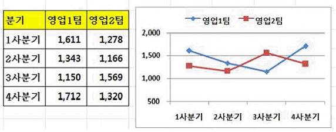
- 표 전체를 원본 데이터로 사용하고 있다.
- 분기가 데이터 계열로 사용되고 있다.
- 세로 (값) 축의 축 서식에서 최소값을 ‘500’으로 설정 하였다.
- 차트의 종류는 표식이 있는 꺾은선형이다.
(정답률: 72%)
3과목: 데이터베이스 일반
41. 다음 중 Access의 보고서 개체에 대한 설명으로 옳지 않은 것은?
- 보고서는 테이블이나 쿼리의 내용을 화면이나 프린터로 인쇄하기 위한 개체이다.
- 보고서의 레코드 원본으로 테이블, 쿼리, SQL 문을 사용한다.
- 보고서에도 조건부 서식을 적용할 수 있다.
- 보고서의 컨트롤을 이용하여 레코드 원본으로 사용된 테이블에 데이터를 입력하거나 수정할 수 있다.
(정답률: 50%)
42. 다음 중 아래의 SQL문에 대한 설명으로 옳지 않은 것은?
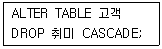
- 고객 테이블의 구조적인 변경이 발생한다.
- 취미 필드를 고객 테이블로부터 삭제한다.
- CASCADE는 해당 필드와 연관된 다른 테이블의 내용도 삭제하는 옵션이다.
- 고객 테이블이 수정되면 취미 테이블의 내용도 같이 수정된다.
(정답률: 58%)
43. 다음 중 DoCmd 개체에서 사용할 수 있는 메서드로 옳지 않은 것은?
- Close
- Undo
- OpenForm
- Quit
(정답률: 62%)
44. 다음 중 DBMS의 단점에 대한 설명으로 옳지 않은 것은?
- 하드웨어나 DBMS 구입 비용, 전산화 비용 등이 증가함
- DBMS와 데이터베이스 언어를 조작할 수 있는 고급 프로그래머가 필요함
- 데이터를 통합하는 중앙 집중 관리가 어려움
- 데이터의 백업과 복구에 많은 비용과 시간이 소요됨
(정답률: 64%)
45. 다음 중 쿼리를 실행할 때마다 메시지 상자를 표시하여 사용자에게 조건 값을 입력받아 쿼리를 실행하는 유형은?
- 크로스탭 쿼리
- 매개 변수 쿼리
- 통합 쿼리
- 실행 쿼리
(정답률: 68%)
46. 다음 중 폼 작성에 대한 설명으로 옳지 않은 것은?
- [컨트롤 마법사]를 이용하여 ‘폼 닫기’ 매크로를 실행시키는 명령 단추를 삽입할 수 있다.
- 폼 속성 시트에서 그림을 설정하면 폼의 배경 그림으로 표시된다.
- 사각형, 직선 등의 도형 컨트롤을 삽입할 수 있다.
- [그룹화 및 정렬] 기능으로 레코드를 그룹화하여 표시 할 수 있다.
(정답률: 31%)
47. 다음 중 [속성 시트] 창에서 하위 폼의 제목(레이블)을 변경하기 위한 방법으로 옳은 것은?
- [형식] 탭의 ‘캡션’을 수정한다.
- [데이터] 탭의 ‘표시’를 수정한다.
- [이벤트] 탭의 ‘제목’을 수정한다.
- [기타] 탭의 ‘레이블’을 수정한다.
(정답률: 55%)
48. 다음 중 보고서의 [페이지 설정] 대화상자에 대한 설명으로 옳지 않은 것은?
- 여러 열로 구성된 보고서를 인쇄할 때에는 [열] 탭에서 열의 개수와 행 간격, 열의 너비, 높이 등을 설정한다.
- [인쇄 옵션] 탭에서 보고서의 위쪽, 아래쪽, 왼쪽, 오른쪽 여백을 밀리미터 단위로 설정할 수 있다.
- [페이지] 탭에서 보고서의 인쇄할 범위로 인쇄할 페이지를 지정할 수 있다.
- [인쇄 옵션] 탭의 ‘데이터만 인쇄’를 선택하여 체크 표시하면 컨트롤의 테두리, 눈금선 및 선이나 상자 같은 그래픽을 표시하지 않는다.
(정답률: 44%)
49. 다음 중 텍스트 상자 컨트롤의 [속성 시트] 창에 표시 되는 각 탭에서 설정 가능한 속성으로 옳은 것은?
- [형식] 탭 - 유효성 검사 규칙, 중복 내용 숨기기
- [이벤트] 탭 - IME 모드, 하이퍼링크
- [기타] 탭 - 상태 표시줄 텍스트, 탭 인덱스
- [데이터] 탭 - 데이터시트 캡션, 기본 값
(정답률: 42%)
50. 다음 중 테이블에 데이터가 입력되는 방식을 제어하기 위한 방법으로 적절하지 않은 것은?
- 유효성 검사 규칙을 설정하여 필드에 입력되는 데이터 값의 범위를 설정한다.
- 입력 마스크를 이용하여 필드의 각 자리에 입력되는 값의 종류를 제한한다.
- 색인(index)을 이용하여 해당 필드에 중복된 값이 입력되지 않도록 설정한다.
- 기본 키(Primary Key) 속성을 이용하여 레코드 추가 시 기본으로 입력되는 값을 설정한다.
(정답률: 45%)
51. 다음 중 콤보 상자의 속성에 대한 설명으로 옳지 않은 것은?
- 컨트롤 원본 : 목록으로 표시할 데이터를 SQL문이나 테이블명 등을 통해 지정한다.
- 행 원본 유형 : 목록으로 표시할 데이터 제공 방법을 ‘테이블/쿼리’, ‘값 목록’, '필드 목록' 중 선택한다.
- 바운드 열 : 선택한 항목에서 몇 번째 열을 컨트롤에 저장할 것인지를 설정한다.
- 목록 값만 허용 : ‘예’로 설정하면 목록에 제공된 데이터 이외의 값을 추가할 수 없다.
(정답률: 29%)
52. 다음 중 다양한 사용자의 요구 사항을 분석하여 정보 구조를 표현한 관계도(ERD)를 생성하는 데이터베이스 설계 단계는?
- 데이터베이스 기획
- 개념적 설계
- 논리적 설계
- 물리적 설계
(정답률: 52%)
53. 다음 중 보고서 페이지 번호를 표시하는 컨트롤에 입력된 컨트롤 원본과 그 결과가 맞게 연결된 것을 모두 고른것은? (단, 전체 페이지는 5페이지임, 순서대로 컨트롤 원본, 결과)
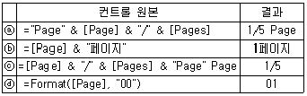
- ⓐ, ⓑ, ⓒ
- ⓑ, ⓒ, ⓓ
- ⓐ, ⓒ
- ⓑ, ⓓ
(정답률: 73%)
54. [직원] 테이블의 ‘급여’필드는 데이터 형식이 숫자이고, 필드 크기가 정수(Long)로 설정되어 있다. 다음 중 ‘급여’ 필드에 입력 가능한 숫자를 백만원 이상, 오백만원 이하로 설정하기 위한 유효성 검사 규칙으로 옳은 것은?
- <= 1000000 Or <= 5000000
- >= 1000000 And <= 5000000
- >= 1000000, <= 5000,000
- 1,000,000 <= And <= 5,000,000
(정답률: 68%)
55. 다음 중 프로시저에 대한 설명으로 옳지 않은 것은?
- 프로시저는 연산을 수행하거나 값을 계산하는 일련의 명령문과 메서드로 구성된다.
- 명령문은 대체로 프로시저나 선언 구역에서 한 줄로 표현되며 명령문의 끝에는 세미콜론(;)을 찍어 구분한다.
- 이벤트 프로시저는 특정 객체에 해당 이벤트가 발생하면 자동적으로 실행되나 다른 프로시저에서도 이를 호출하여 실행할 수 있다.
- Function 프로시저는 Function 문으로 함수를 선언하고 End Function 문으로 함수를 끝낸다.
(정답률: 50%)
56. 다음 중 특정 필드에 입력 마스크를 ‘09#L’로 설정 하였을 때의 입력 데이터로 옳은 것은?
- 123A
- A124
- 12A4
- 12AB
(정답률: 61%)
57. 다음 중 액세스에서 사용되는 데이터 형식의 종류 -크기 - 특징에 대한 연결이 옳은 것은?
- 메모 - 65,535자 이내 - 참고나 설명과 같이 긴 문자열이나 문자열과 숫자의 조합
- 예/아니요 - 1바이트 - 두 값 중 하나만을 선택할 때 사용
- 통화 - 8비트 - 소수점 왼쪽으로 7자리, 오른쪽으로 4자리까지 표시 가능
- 숫자 - 2바이트 - 산술 계산에 이용되는 숫자 데이터
(정답률: 52%)
58. 다음 중 SELECT 문의 선택된 필드에서 중복 데이터를 포함하는 레코드를 제외시키는 조건자로 옳은 것은?
- DISTINCT
- UNIQUE
- ONLY
- *
(정답률: 77%)
59. 사원관리 데이터베이스에는 [부서정보] 테이블과 실적 정보를 포함한 [사원정보] 테이블이 관계로 연결되어 있다. 다음 중 아래의 SQL문의 실행 결과에 대한 설명으로 옳은 것은? (단, 부서에는 여러 사원이 있으며, 한 사원은 하나의 부서에 소속되는 1 대 다 관계임)
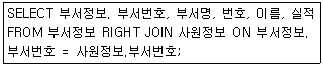
- 두 테이블에서 부서번호가 일치되는 레코드의 부서번호, 부서명, 번호, 이름, 실적 필드를 표시한다.
- [부서정보] 테이블의 레코드는 모두 포함하고, [사원정보] 테이블에서는 실적이 있는 레코드만 포함하여 결과를 표시한다.
- [부서정보] 테이블의 레코드는 [사원정보] 테이블의 부서번호와 일치되는 것만 포함하고, [사원정보] 테이블에서는 실적이 있는 레코드만 포함하여 결과를 표시한다.
- [부서정보] 테이블의 레코드는 [사원정보] 테이블의 부서번호와 일치되는 것만 포함하고, [사원정보] 테이블에서는 모든 레코드가 포함하여 결과를 표시한다.
(정답률: 45%)
60. 폼 바닥글에 [사원] 테이블의 '직급'이 '과장'인 레코드들의 '급여' 합계를 구하고자 한다. 다음 중 폼 바닥글의 텍스트 상자 컨트롤에 입력해야 할 식으로 옳은 것은?
- =DHAP("[사원]", "[급여]", "[직급]='과장'")
- =DHAP("[급여]", "[사원]", "[직급]='과장'")
- =DSUM("[사원]", "[급여]", "[직급]='과장'")
- =DSUM("[급여]", "[사원]", "[직급]='과장'")
(정답률: 65%)